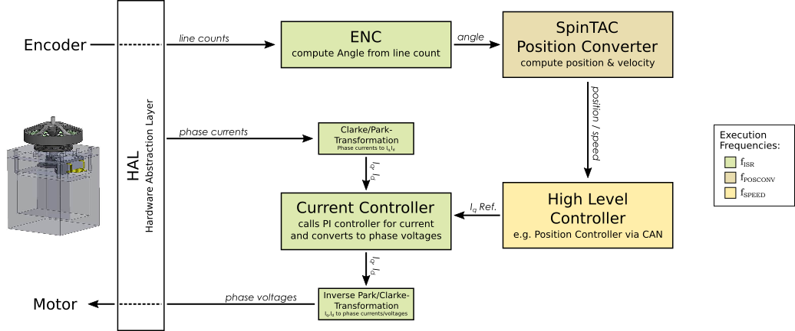

Program Structure & Frequencies¶
Note
The information of this page is intended for people who want to modifiy the firmware and is not needed if you only want to use it as is.
The programs that run on the microcontroller usually consist of two loops: an endless loop in the main() function that runs without any timing guarantees and a main ISR (Interrupt Service Routine) function that is triggered by an interrupt based on the PWM frequency. Everything that is timing critical (controller, position update, …) should go to the ISR, while other stuff should go to the main loop (update of GUI values, etc.). Please note that the ISR must finish in time (withing 1/fISR seconds) to avoid that interrupts are missed.
Since not everything in the ISR has to run at full frequency, there are decimators for these parts of the code. They reduce the frequency by simply calling the relevant code only at every n-th time the ISR is executed.
The following figure illustrates the two loops and their frequencies.

The frequencies are related on each other with an hierachical system:
The base is the PWM frequency fPWM
ISR frequency fISR is a fraction of fPWM
Remaining frequencies are fractions of fCTRL
Note: The current programs (based on the example labs) for dual motor control are not implemented cleanly. The frequency of the PI controller for current should be decimated to fCTRL but this is not the case in the current implementation where fCTRL is implicitly set to fISR (therefore fCTRL is not mentioned in the figure above). This is only a minor issue, though, as usually fCTRL is set to fISR anyway.
Single Motor |
Dual Motor |
|
|---|---|---|
fPWM |
45 kHz |
20 kHz |
fISR |
15 kHz |
10 kHz |
fCTRL |
15 kHz |
10 kHz* |
fPOSCONV |
3 kHz |
10 kHz |
fSPEED |
1 kHz |
1 kHz |
* not explicitly implemented in example projects for dual motor (see “Note” above).
Configure Frequencies¶
The frequencies are set via “decimation factors” in the user_jx.h files (or
user_mtr_on_jx.h for dual motor projects). See user_config:index for
details.
Program Flow¶
The following figure shows a simplified illustration of the program flow.
